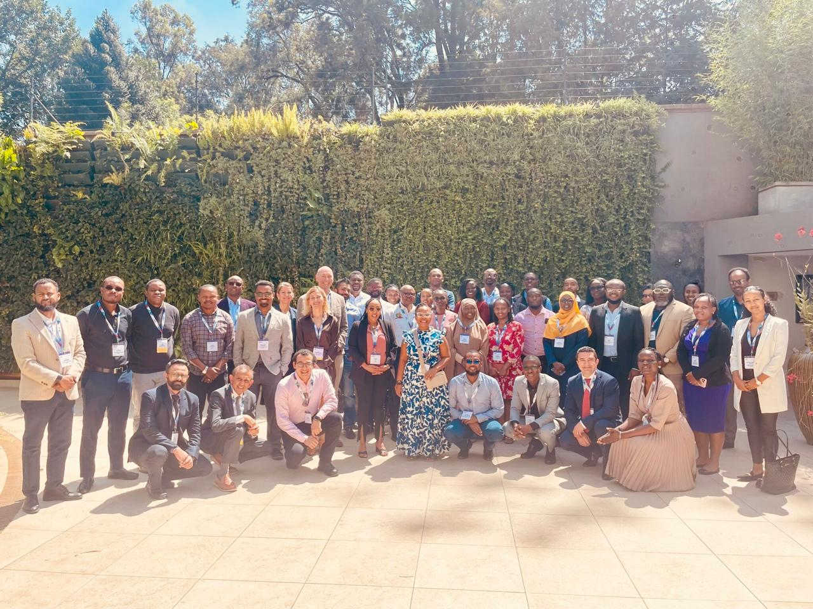

Homepage direction
Does the public site clearly communicate AFROC's mission, work packages, partners, events, and contact routes?
This page is a simple review extract for stakeholders. It shows the website direction, the key public sections, and how the MDT archive is now being presented with direct session references.
Overview
This extract is designed for quick review. It focuses on the visual identity, clarity of content, credibility of the public-facing story, and usability of the MDT archive.
Does the public site clearly communicate AFROC's mission, work packages, partners, events, and contact routes?
Does the MDT page read like a proper archive with dated sessions, named contributors, and direct recording references?
Does the African theme feel appropriate, credible, and aligned with AFROC's green and gold brand language?
Homepage Snapshot

Team Snapshot
The team imagery helps the site feel more credible, more human, and more representative of the real collaboration.


The site has been simplified to a focused public homepage and one MDT archive page.
The programme structure is now easier to scan and understand.
The archive includes real dated session entries with case themes and participant references.
Typography, color, cards, and spacing now follow one consistent design language.
MDT Archive Snapshot
The MDT page has been reframed around real sessions, dates, specialty filters, named speakers, and direct recording references where available.

2026 Schedule Snapshot
The 2026 tracker confirms a full programme rhythm from March to December 2026, with some sessions already tied to named speakers and moderators.
Representative Sessions
Feedback Focus
Review Links
Stakeholders who want more detail can open the live pages directly from here.